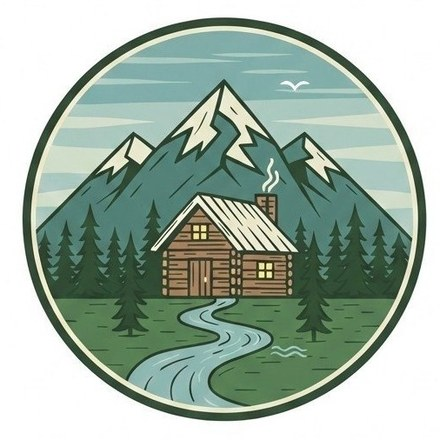
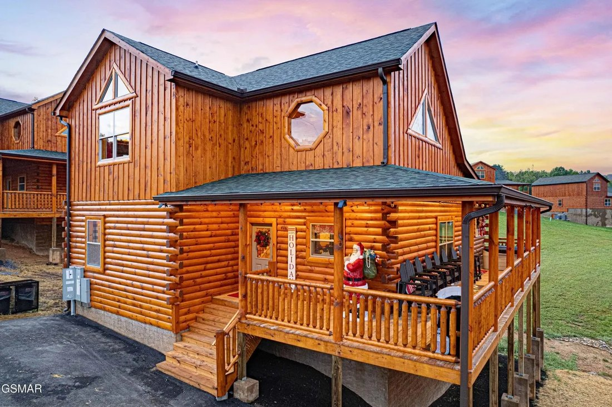

A brand-new luxury cabin just one minute off the Parkway, perfectly placed between Pigeon Forge and Gatlinburg. Skip the white-knuckle mountain roads, then come home to a private indoor heated pool, a hot tub under the stars, a game room, and four ensuite suites that sleep twelve.
406 Southern Sun Way
Pigeon Forge, TN 37863

You're on a flat, easy-access road just seconds from the main Parkway, so the area's biggest attractions are only a short, easy drive away. Approximate drive times from your door:
Important — use Google Maps. This is a newly built cabin, and at the moment only Google Maps locates the address reliably. Apple Maps and Waze may not recognize it yet, so set your route in Google Maps before you head out.
Comfort-food landmark beside a working grist mill. Fried chicken, chicken pot pie, meatloaf, and scratch breakfasts with grits and cornbread ground next door.
Try: fried chicken · pot pie · the fresh-milled cornbreadJust across the square, a cozy spot serving Southern plates with a bistro twist, on pottery made next door. Pimento cheese, signature quiches, fresh salads and standout desserts.
Try: a patio table by the fountain on a nice dayThe move for a big cabin group. Sit down and bowls of Southern home cooking keep coming, family-style. Easy, hearty, and great for feeding twelve without a fuss.
Best for: large groups & hungry crewsPancakes with warm syrup, French toast, omelets and loaded platters in a farmhouse setting. The classic fuel-up before a Dollywood, trail, or national-park day.
Tip: go early; the morning line builds fastHand-cut steaks grilled over oak, with scratch soups, sauces and gravies. The grown-up dinner when the meal is part of the splurge.
Try: the Texas T-Bone or a bone-in ribeyeScratch-made New American with locally sourced beef, craveable burgers, and a deep craft-beer and cocktail list. Lively, casual, and a reliable crowd-pleaser.
Best for: a relaxed group dinnerSouthern-style catfish and fried chicken with "bottomless vittles" — white beans, slaw, hush puppies, fries or mashed potatoes. Save room for cobbler.
Best for: a true Southern fish fryEasygoing sports-bar feel with big burgers, wings, and a deck. A good casual lunch or a spot to catch the game after a day on the Parkway.
Best for: a laid-back, kid-friendly mealTennessee BBQ with slow-smoked pulled pork and brisket, generous sides, and a relaxed, music-friendly vibe. A solid pick for smoked-meat cravings.
Try: the BBQ plate with skillet mac & cheesePigeon Forge is the unofficial pancake capital of the South — you'll pass a great pancake house every few blocks (Sawyer's, Frizzle Chicken, Reagan's and more). For dinner-and-a-show, the area's big three are Dolly Parton's Stampede, the Hatfield & McCoy Dinner Feud, and Pirates Voyage — book ahead in season. (More on shows in Things to Do.)
Tip: reserve dinner shows at least a week out in summer and OctoberOne of America's most-awarded theme parks: world-class coasters, craft shows, Smoky Mountain food, and seasonal festivals. New for 2026 is NightFlight Expedition, an immersive indoor adventure coaster. Plan a full day, and check the calendar for operating days and festival dates.
Tip: arrive at opening, hit headline rides first, save shows for midday heat Plan & tickets: dollywood.comA 23-acre entertainment hub with the 200-ft Great Smoky Mountain Wheel, a dancing fountain show, shops, snacks, an arcade, and Ole Smoky Moonshine. Easy, walkable, and free to wander.
Best for: an easy evening with the whole group islandinpigeonforge.comTennessee's legal-moonshine country. Sample at Ole Smoky (at The Island), Old Forge Distillery, Tennessee Shine Co., and Junction 35. Most offer cheap tasting flights and short tours.
Tip: tastings fill up on weekend evenings — go earlierDolly Parton's Stampede (horses & a four-course meal), the Hatfield & McCoy Dinner Feud (comedy + Southern feast), and Pirates Voyage (acrobatics on a full-size ship). Loud, fun, and a hit with all ages.
Best for: a no-cooking-tonight family eveningThe most-visited national park in the country is right at your doorstep. Drive Cades Cove (an 11-mile loop famous for wildlife), Newfound Gap, and the Roaring Fork Motor Nature Trail; hike to Laurel Falls, Clingmans Dome (Kuwohi), or Andrews Bald. There's no entrance fee, but a parking tag is required to stop (see Good to Know).
Tip: go early for wildlife and parking; Cades Cove jams up by mid-morning nps.gov/grsmGravity-fed alpine coasters you control yourself, plus zipline canopy tours. Try the Smoky Mountain Alpine Coaster, Rowdy Bear, Goats on a Roof, and Smoky Mountain Ziplines.
Best for: teens and thrill-seekersBeyond the dinner shows, the Parkway is lined with theaters — magic, music, and the long-running Comedy Barn. A relaxed, indoor option for a cooler or rainy night.
Best for: an easy night out of the weatherSlides, a wave pool, and a lazy river next to Dollywood. A must on a hot summer day; it runs seasonally, so confirm the calendar before you go.
Best for: beating the summer heatYou can't miss it — it looks flipped on its roof. Inside: 100+ interactive exhibits, an indoor ropes course, and a laser-tag arena. A great rainy-day plan.
Best for: curious kids & a weather backupMulti-level go-kart tracks, mini-golf, bumper boats, kiddie rides and an arcade — the classic Pigeon Forge midway. Pay per attraction or grab a points card.
Best for: burning off energy after dinnerWalk aboard a half-scale Titanic with a real boarding pass, touch a real iceberg, and feel the sloping decks. Surprisingly moving and very kid-engaging.
Best for: ages 6+ and history buffsReal snow indoors, all year, for snow tubing and a kids' play area. A genuinely different way to spend a hot afternoon or a rainy one.
Best for: little ones & noveltyWholesome, all-ages stage shows with comedy, animals, and magic. An easy, air-conditioned evening the kids will talk about.
Best for: a low-key family nightA behind-the-scenes look at crime-solving and forensics, with plenty of interactive exhibits. Best for tweens, teens, and the CSI-obsessed.
Best for: ages 10+ on a rainy dayYour cabin is an attraction in itself. Spend a slow morning in the private indoor heated pool, run a game-room tournament on the arcade, fire up the grill, and soak in the hot tub after dark. It's the perfect reset between big days out — and the best rainy-day plan of all.
Reminder: keep the pool door locked and watch children closely — there's no lifeguardStock the kitchen for a group of twelve
Meds, sunscreen, and last-minute needs
When nobody wants to leave the hot tub
The perfect end to a mountain day
Ride a chairlift up Crockett Mountain to the SkyDeck, then walk the SkyBridge — at 680 feet, the longest pedestrian suspension bridge in North America, with glass-floor panels in the middle. 2026 admission runs about $30 adults / $22 kids (ages 4–11), including the chairlift.
Tip: sunset is stunning; buy combo tickets online if pairing with another attraction gatlinburgskypark.comA gondola or chairlift climbs to a mountaintop park with a 16-bridge Treetop Skywalk, the Anavista Tower, ziplines, a mountain coaster, gardens, and dining. Genuinely great for all ages.
Best for: views, kids, and a little thrill anakeesta.com10,000+ sea creatures, a glass underwater tunnel with sharks and rays, and hands-on touch tanks. One of the area's top rainy-day picks for families.
Best for: little ones & a weather backupRide the tram up Mount Harrison for skiing and snow tubing in winter, or the alpine slide, mountain coaster and wildlife encounter the rest of the year.
Best for: winter snow play or summer ridesThe largest group of independent artisans in the country — 100+ studios and galleries along a scenic loop just east of downtown. Pottery, leather, brooms, candles, and more.
Best for: souvenirs with a storyMoonshine and whiskey tastings (Sugarlands, Ole Smoky), the European-style Village Shops, candy makers, and live music at spots like Ole Red. Easy to wander on foot.
Tip: park once and walk; downtown lots fill fast middayUse Google Maps to find us. The cabin is brand new, so only Google Maps locates 406 Southern Sun Way reliably right now. Apple Maps and Waze may send you the wrong way — set your route in Google Maps before leaving.
You're in black-bear country — the park is home to roughly 1,500 black bears, and they do wander into neighborhoods and cabins. A few rules keep you and the bears safe.
You're a flat minute from the Parkway, but day trips climb into the mountains. A little planning goes a long way.
A few essentials so everyone has a great, safe stay. (Drawn from your booking details — final house rules posted inside the cabin.)
Dollywood, dinner shows, and tours sell out in summer and on October weekends. Reserve before you arrive.
Buy and print your Park It Forward parking tag before you go, so you're not hunting for one at the trailhead.
Traffic on the strip peaks midday. Start days early and you'll save real time, especially in fall.
Mountain mornings and higher elevations are cool even in summer. A light jacket goes a long way.
Dinner-show servers, guides, and tour crews work for tips — bring a little cash to thank a great one.
We're so glad you chose Elemental Oasis. Have a wonderful stay in the Smokies!